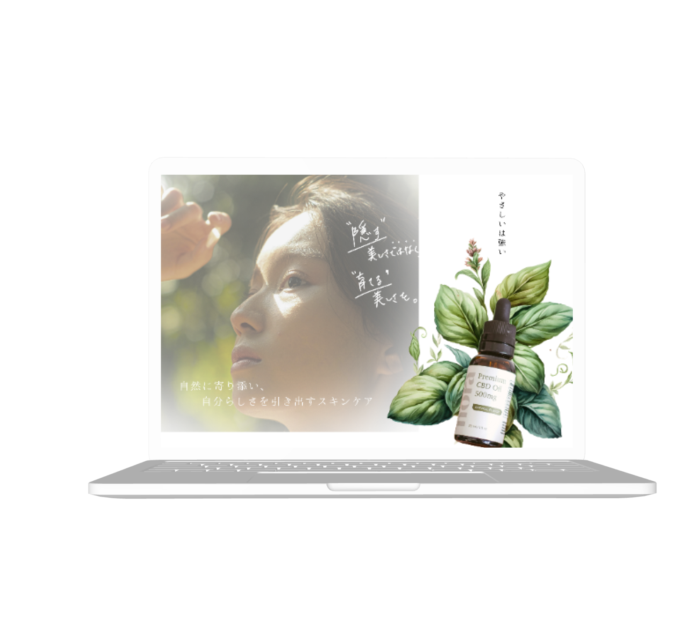

Web Design / LP
WORKS
Organic Skincare LP
Direction / Design
自然由来成分にこだわった美容液ブランドの世界観を、やわらかく上質な印象で表現したLPデザインです。

概要
自然由来成分を使用した美容液のLPとして、「肌本来の美しさを引き出す」というコンセプトをもとに設計しました。 機能や効果を一方的に訴求するのではなく、ユーザーの悩みに寄り添いながら、安心して選べるブランドであることが伝わる構成を目指しました。
目的
商品の成分や特徴を分かりやすく伝えると同時に、ブランドの世界観を通して安心感と信頼感を醸成し、 ユーザーの不安を解消することを目的としました。
ターゲット
スキンケアへの関心が高く、成分や品質にこだわりを持ちながらも、自分の肌に合う商品を慎重に選びたいと考えている20〜40代女性を想定しています。 特に、敏感肌や乾燥などの悩みを抱え、安心して使える化粧品を求めている層をメインターゲットとしました。
課題
化粧品市場には多くの商品があるため、「何を基準に選べば良いかわからない」という情報過多の状態が生まれやすいと考えました。 また「本当に効果があるのか」「肌に合うのか」という不安から、購入に踏み切れないケースも想定しました。
デザイン
ナチュラルでやさしい印象を与えるため、グリーンやベージュを基調とした配色で全体を統一しました。 余白を大きく取り、空気感のあるレイアウトにすることで、安心感と上質さが伝わるよう意識しています。
植物や成分のビジュアルを効果的に配置し、自然由来であることを視覚的に表現しました。 装飾は最小限に抑え、ブランドの世界観を損なわないシンプルなデザインに仕上げています。
制作範囲
使用ツール
Figma / photoshop / illustrater

Yumi Goto